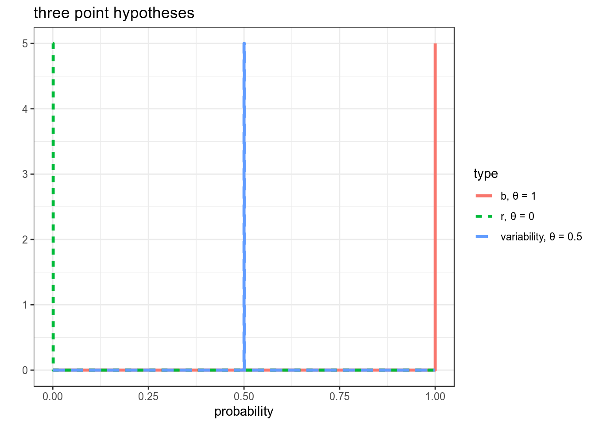
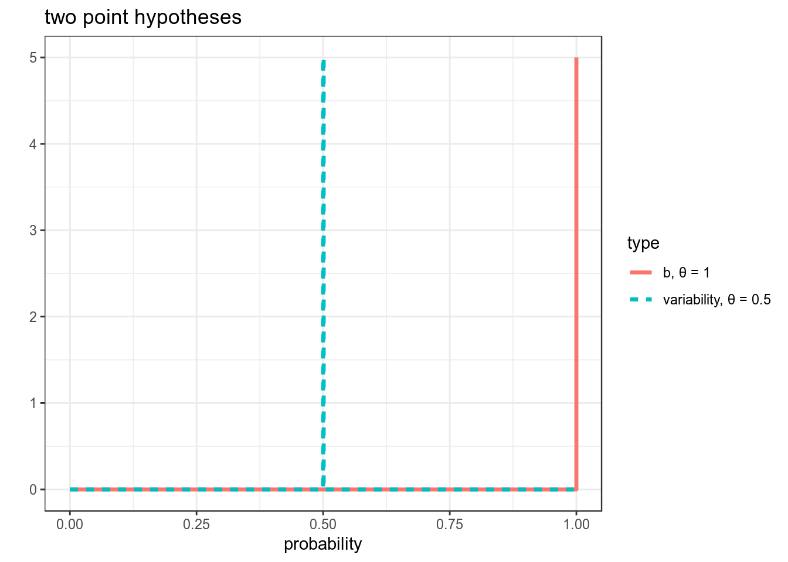
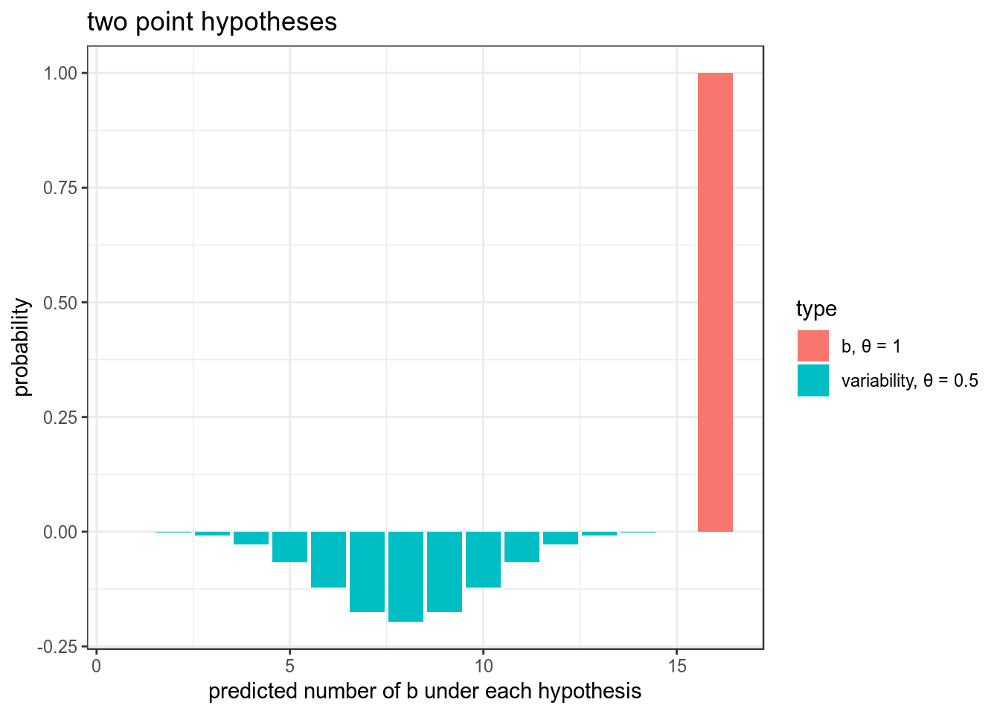
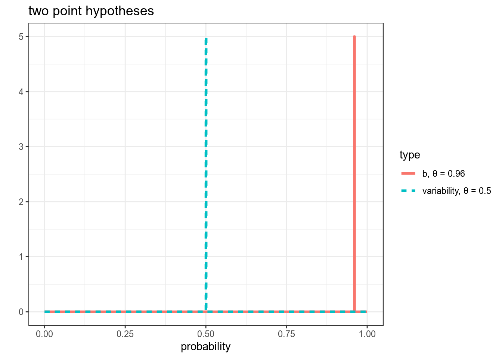
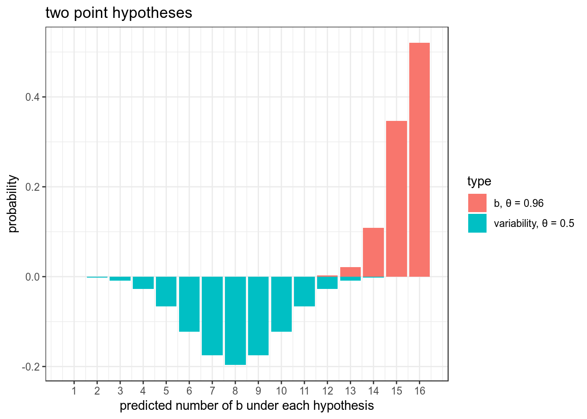
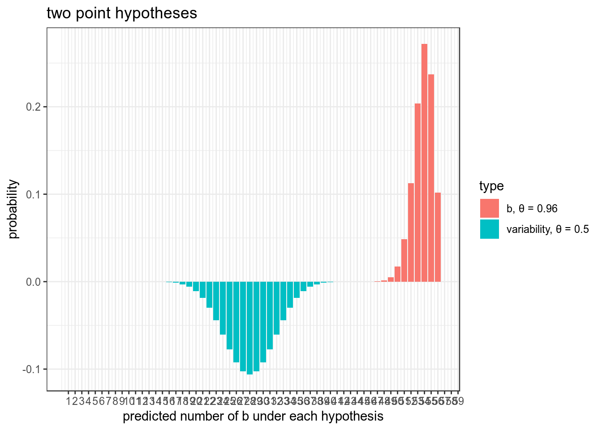
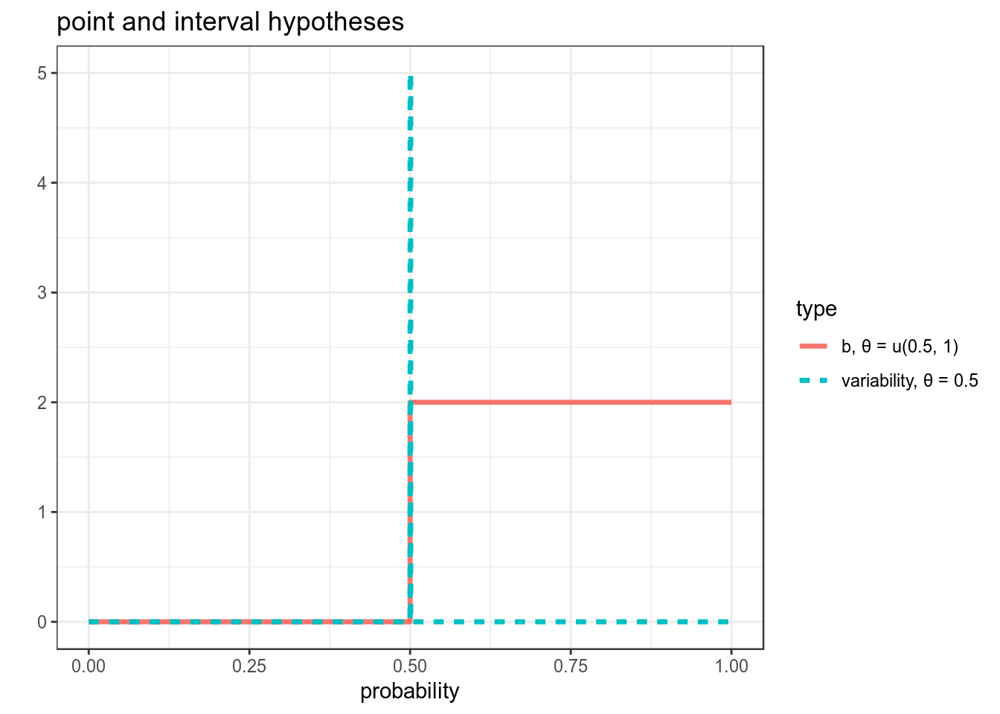
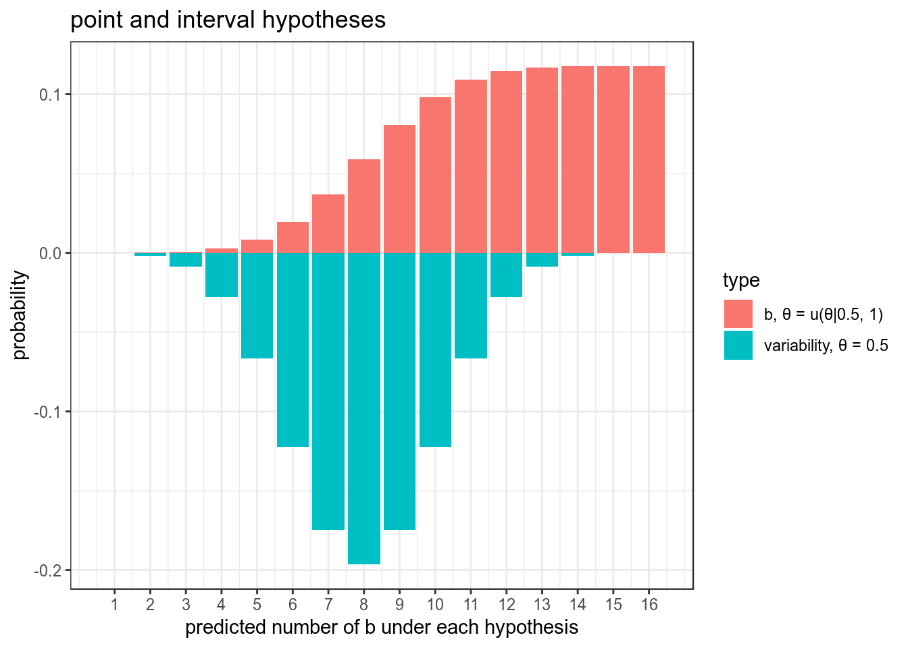
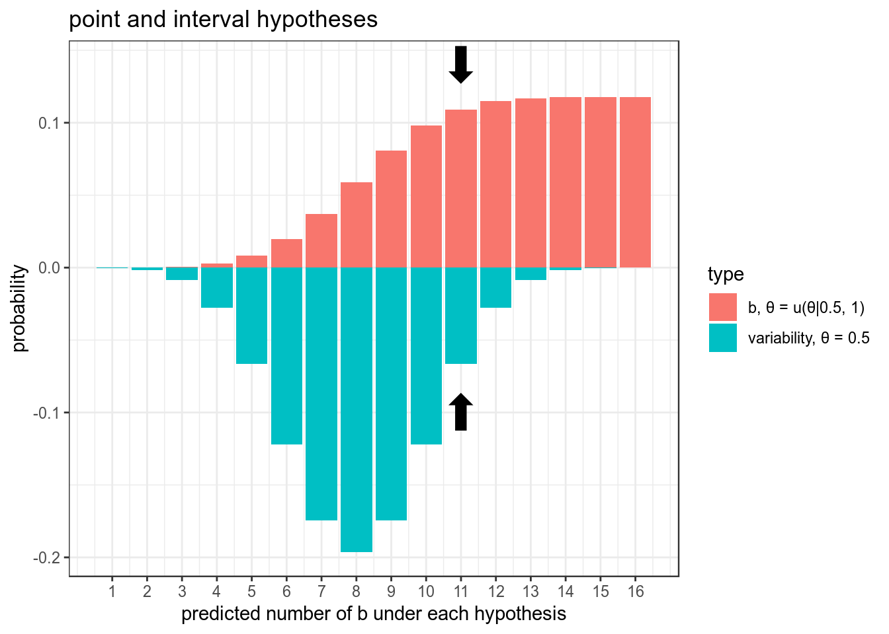
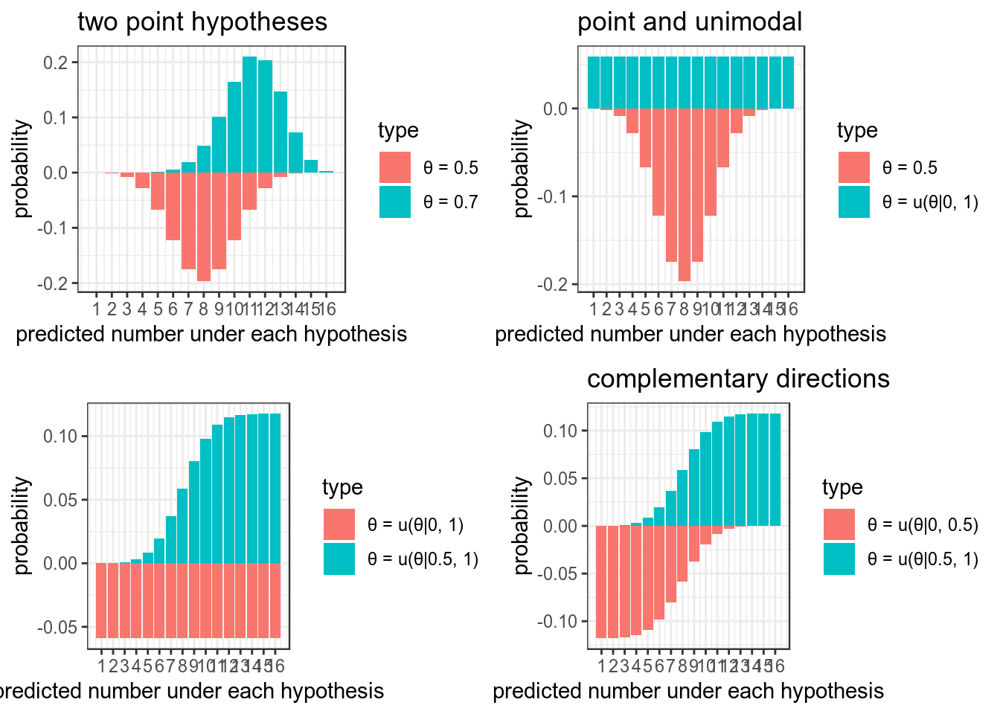

- Доверительные интервалы. Биномиальный тест
library(tidyverse)
theme_set(theme_bw())1. Байесовский вывод
1.1 Нотация
В байесовском подоходе статистический вывод описывается формулой Байеса
\[P(θ|Data) = \frac{P(Data|θ)\times P(θ)}{P(Data)}\]
- \(P(θ|Data)\) — апостериорная вероятность (posterior)
- \(P(Data|θ)\) — функция правдоподобия (likelihood)
- \(P(θ)\) — априорная вероятность (prior)
- \(P(Data)\) — нормализующий делитель
В литературе можно еще встретить такую запись:
\[P(θ|Data) \propto P(Data|θ)\times P(θ)\]
1.2 Бета-распределение
\[P(x; α, β) = \frac{x^{α-1}\times (1-x)^{β-1}}{B(α, β)}; 0 \leq x \leq 1; α, β > 0\]
Бета функция:
\[Β(α, β) = \frac{Γ(α)\times Γ(β)}{Γ(α+β)} = \frac{(α-1)!(β-1)!}{(α+β-1)!} \]
data_frame(x = seq(0, 1, length.out = 100),
density = dbeta(x = x, shape1 = 8, shape2 = 42)) %>%
ggplot(aes(x, density))+
geom_point()+
geom_line()+
labs(title = "Бета распределение α = 8, β = 42")Можно поиграть с разными параметрами:
shiny::runGitHub("agricolamz/beta_distribution_shiny") \[\mu = \frac{\alpha}{\alpha+\beta}\]
\[\sigma^2 = \frac{\alpha\times\beta}{(\alpha+\beta)^2\times(\alpha+\beta+1)}\]
\[mode = \frac{\alpha-1}{\alpha+\beta-2}\]
1.3 Данные
- количество “не” в 311 рассказов А. Чехова
- число слов в каждом рассказе
chekhov <- read_csv("https://raw.githubusercontent.com/agricolamz/2019_FE_R_statistics/master/data/chekhov.csv")## Parsed with column specification:
## cols(
## titles = col_character(),
## word = col_character(),
## n = col_double(),
## n_words = col_double()
## )chekhov %>%
mutate(trunc_titles = str_trunc(titles, 25, side = "right"),
average = n/n_words) ->
chekhov2. Байесовский доверительный интервал
Какие вопросы к апостериорному распределению можно задать?
- попытка оценить параметр θ и какой-нибудь интервал, в котором он лежит.
- ответить на вопросы вроде
- какая вероятность что значение θ больше некоторого значения \(x\)?
- какая вероятность что значение θ лежит в интервале \([x; y]\)?
- и т. п.

2.1 Симметричный интервал (equal-tailed interval): медиана и квантили
Байесовский доверительный \(k\)-% интервал (по-английски credible interval) — это интервал \([\frac{k}{2}, 1-\frac{k}{2}]\) от апостериорного распределения. Давайте проапдейтим данные рассказов Чехова при помощи априорного распределения с параметрами (\(\alpha = 5.283022\), \(\beta = 231.6328\)), а дальше можем использовать функцию qbeta(), чтобы получить интервал, в котором находятся центральные \(k\)%.
chekhov %>%
slice(1:30) %>%
group_by(trunc_titles) %>%
mutate(beta_prior = n_words-n,
alpha_post = n + 5.283022,
beta_post = beta_prior + 231.6328,
median_post = qbeta(0.5, alpha_post, beta_post),
eq_t_int_min = qbeta(0.025, alpha_post, beta_post),
eq_t_int_max = qbeta(0.975, alpha_post, beta_post)) %>%
ggplot(aes(x= trunc_titles))+
geom_pointrange(aes(y = median_post, ymin = eq_t_int_min, ymax = eq_t_int_max), color = "tomato")+
coord_flip()+
labs(title = 'Доверительные интервалы употребления "не" в рассказах А. Чехова',
x = "", y = "",
caption = "байесовский симметричный доверительный интервал")2.2 Интервал максимальной (апостериорной) плотности (Highest (posterior) density interval): мода и HDI
chekhov %>%
slice(1:30) %>%
group_by(trunc_titles) %>%
mutate(beta_prior = n_words-n,
alpha_post = n + 5.283022,
beta_post = beta_prior + 231.6328,
median_post = qbeta(.5, alpha_post, beta_post),
moda_post = (alpha_post-1)/(alpha_post+beta_post-2),
hdi_int_min = HDInterval::hdi(qbeta, shape1 = alpha_post, shape2 = beta_post, credMass = 0.95)[1],
hdi_int_max = HDInterval::hdi(qbeta, shape1 = alpha_post, shape2 = beta_post, credMass = 0.95)[2],
eq_t_int_min = qbeta(.025, alpha_post, beta_post),
eq_t_int_max = qbeta(.975, alpha_post, beta_post)) %>%
ggplot(aes(x= trunc_titles))+
geom_pointrange(aes(y = median_post, ymin = eq_t_int_min, ymax = eq_t_int_max), color = "tomato")+
geom_pointrange(aes(y = moda_post, ymin = hdi_int_min, ymax = hdi_int_max), color = "palegreen3", position = position_nudge(x = -0.3))+
coord_flip()+
labs(title = 'Доверительные интервалы употребления "не" в рассказах А. Чехова',
x = "", y = "",
caption = "красные — байесовский симметричный доверительный интервал;\n зеленый — байесовский интервал максимальной плотности")В качестве аргумента в пользу HDI всегда приводят вот такое распределение:
2.3
Посчитайте 80% байесовский симметричный интервал от бета-распределения с параметрами 43 и 57. Ответ приведите с точностью до 3 знаков после запятой.
Минимальное значение:
Максимальное значение:
Посчитайте 80% байесовский интервал максимальной (апостериорной) плотности от бета-распределения с параметрами 43 и 57. Ответ приведите с точностью до 3 знаков после запятой.
Минимальное значение:
Максимальное значение:
3. Байесовский биномиальный тест
Представим старую задачу, когда у нас есть монетка с равновероятными, как мы полагаем, исходами, и мы пытаемся оценить насколько она соответствует нашим ожиданиям, если из 15 подкидываний 11 — решка.
Мы воспользуемся двумя возможными априорными распределениями:
- неинформативным априорным распределением
data_frame(x = seq(0, 1, length.out = 1000),
density = dbeta(x = x, shape1 = 1, shape2 = 1)) %>%
ggplot(aes(x, density))+
geom_line()+
labs(title = "Бета распределение α = 1, β = 1")- распределением Джефри
data_frame(x = seq(0, 1, length.out = 1000),
density = dbeta(x = x, shape1 = 0.5, shape2 = 0.5)) %>%
ggplot(aes(x, density))+
geom_line()+
labs(title = "Бета распределение α = 0.5, β = 0.5")Произведем байесовский апдейт неинформативного априорного распределения:
n_observation <- 15
a_post <- 1+11
b_post <- 1+4
data_frame(stats = c("mean", "sd", "80% credible interval min", "80% credible interval max"),
values = c(a_post/sum(a_post, b_post),
a_post*b_post/((a_post+b_post)^2*(a_post+b_post+1)),
qbeta(.1, shape1 = a_post, shape2 = b_post),
qbeta(.9, shape1 = a_post, shape2 = b_post)),
x_pred = values*n_observation)## # A tibble: 4 x 3
## stats values x_pred
## <chr> <dbl> <dbl>
## 1 mean 0.706 10.6
## 2 sd 0.0115 0.173
## 3 80% credible interval min 0.561 8.42
## 4 80% credible interval max 0.839 12.6data_frame(x = seq(0, 1, length.out = n_observation),
density = dbeta(x = x, shape1 = a_post, shape2 = b_post),
eq_t_int_min = qbeta(.1, shape1 = a_post, shape2 = b_post)*n_observation,
eq_t_int_max = qbeta(.9, shape1 = a_post, shape2 = b_post)*n_observation) %>%
ggplot(aes(1:n_observation, density))+
geom_point()+
geom_line()+
geom_rect(aes(xmin = eq_t_int_min, xmax = eq_t_int_max, ymin = 0, ymax = 0.1))+
labs(title = "Априорное бета распределение α = 1, β = 1",
y = "density",
x = "")## The relative frequency of success is more than 0.5 by a probability of ...
pbeta(0.5, shape1 = a_post, shape2 = b_post)## [1] 0.03840637## and less than 0.5 by a probability of ...
1 - pbeta(0.5, shape1 = a_post, shape2 = b_post)## [1] 0.96159363.1
Теперь давайте произведем байесовский апдейт распределения Джефри.
Введите получившееся среднее апостериорного распределения:Введите получившееся стандартное отклонение апостериорного распределения:
Введите получившуюся нижнюю границу 80% байесовский симметричный интервал:
Введите получившуюся верхнюю границу 80% байесовский симметричный интервал:
Введите ввероятность частоту успехов меньше 0.5:
Введите ввероятность частоту успехов больше 0.5:
4. Байесовский фактор
4.1 Данные
В зиловском диалекте андийского языка существует два класса для неодушевленных предметов. В 2017 году был проведен эксперимент, чтобы проверить, наличие вариативности в отнесению к тому или иному классу заимствованой и исконной лексики.
zilo_classes <- read_csv("https://raw.githubusercontent.com/agricolamz/2019_FE_R_statistics/master/data/zilo.csv")## Parsed with column specification:
## cols(
## s_id = col_double(),
## sex = col_character(),
## age_2017 = col_double(),
## w_id = col_double(),
## stimulus = col_character(),
## translation_en = col_character(),
## translation_ru = col_character(),
## stimulus_source = col_character(),
## class = col_character()
## )head(zilo_classes)## # A tibble: 6 x 9
## s_id sex age_2017 w_id stimulus translation_en translation_ru
## <dbl> <chr> <dbl> <dbl> <chr> <chr> <chr>
## 1 1 f 15 1 milki hous дом
## 2 1 f 15 2 vaɡon train wagon вагон
## 3 1 f 15 3 inɡur window окно
## 4 1 f 15 4 ʁats'a grasshopper кузнечик
## 5 1 f 15 5 iʃkapi cabinet шкаф
## 6 1 f 15 6 haq'u room комната
## # ... with 2 more variables: stimulus_source <chr>, class <chr>Переменные в датасете:
- s_id — код испытуемого
- age_2017 — возраст на 2017 год
- w_id — код стимула
- stimulus
- translation_en
- translation_ru
- stimulus_source — тип слова: исконное или заимствованное
- class — класс слова, к которому испытуемый отнес слово
4.2 Еще понадобиться вот эта функция для унимодального распределения:
dunifbinom <- function(x, N, lo, hi) {
y = x
for (i in 1:length(x)) {
y[i] = integrate(function(theta) dunif(theta, lo, hi) * dbinom(x[i], N, theta),
0, 1, subdivisions = 10000L,
rel.tol = 1e-4,
abs.tol = 1e-4,
stop.on.error = TRUE,
keep.xy = FALSE,
aux = NULL)$value
}
y
}4.3 Гипотезы
- For each word we have three variants:
- b-class
- r-class
- variability
- So we can represent our idea with three point hypotheses:
- b-class — 1
- r-class — 0
- variability — 0.5
4.4 Точечные гипотезы
x_axis <- seq(0, 1, 0.001)
data_frame(x = rep(x_axis, 3),
y = c(5*(x_axis == 0),
5*(x_axis == 1),
5*(x_axis == 0.5)),
type = rep(c("r, θ = 0", "b, θ = 1", "variability, θ = 0.5"),each = 1001)) %>%
ggplot(aes(x, y, xend = x, yend = 0.1, color = type, linetype = type))+
geom_step(size = 1.2)+
labs(title = "three point hypotheses",
x = "probability",
y = "")
Мы рассмотрим только b-класс:
data_frame(x = rep(x_axis, 2),
y = c(5*(x_axis == 1),
5*(x_axis == 0.5)),
type = rep(c("b, θ = 1", "variability, θ = 0.5"),each = 1001)) %>%
ggplot(aes(x, y, xend = x, yend = 0.1, color = type, linetype = type))+
geom_step(size = 1.2)+
labs(title = "two point hypotheses",
x = "probability",
y = "")
Предсказания модели
data_frame(x = rep(1:16, 2),
y = c(-dbinom(1:16, 16, prob = 0.5),
dbinom(1:16, 16, prob = 1)),
type = rep(c("variability, θ = 0.5", "b, θ = 1"),each = 16)) %>%
ggplot(aes(x, y, fill = type))+
geom_col()+
labs(title = "two point hypotheses",
x = "predicted number of b under each hypothesis",
y = "probability")
Надо олабить нашу модель:
data_frame(x = rep(x_axis, 2),
y = c(5*(x_axis == 0.96),
5*(x_axis == 0.5)),
type = rep(c("b, θ = 0.96", "variability, θ = 0.5"),each = 1001)) %>%
ggplot(aes(x, y, xend = x, yend = 0.1, color = type, linetype = type))+
geom_step(size = 1.2)+
labs(title = "two point hypotheses",
x = "probability",
y = "")
Тогда она будет предсказывать:
data_frame(x = rep(1:16, 2),
y = c(-dbinom(1:16, 16, prob = 0.5),
dbinom(1:16, 16, prob = 0.96)),
type = rep(c("variability, θ = 0.5", "b, θ = 0.96"),each = 16)) %>%
ggplot(aes(x, y, fill = type))+
geom_col()+
labs(title = "two point hypotheses",
x = "predicted number of b under each hypothesis",
y = "probability")+
scale_x_continuous(breaks = 1:16)
Однако, если мы увеличим, получиться провал…
data_frame(x = rep(1:56, 2),
y = c(-dbinom(1:56, 56, prob = 0.5),
dbinom(1:56, 56, prob = 0.96)),
type = rep(c("variability, θ = 0.5", "b, θ = 0.96"),each = 56)) %>%
ggplot(aes(x, y, fill = type))+
geom_col()+
labs(title = "two point hypotheses",
x = "predicted number of b under each hypothesis",
y = "probability")+
scale_x_continuous(breaks = 1:96)
4.5 Интервальная оценка
data_frame(x = rep(x_axis, 2),
y = c(5*(x_axis == 0.5),
dunif(x_axis, 0.5, 1)),
type = rep(c("variability, θ = 0.5", "b, θ = u(0.5, 1)"),each = 1001)) %>%
ggplot(aes(x, y, xend = x, yend = 0.1, color = type, linetype = type))+
geom_step(size = 1.2)+
labs(title = "point and interval hypotheses",
x = "probability",
y = "")
Предсказание модели
data_frame(x = rep(1:16, 2),
y = c(-dbinom(1:16, 16, prob = 0.5),
dunifbinom(x = 1:16, 16, 0.5, 1)),
type = rep(c("variability, θ = 0.5", "b, θ = u(θ|0.5, 1)"),each = 16)) %>%
ggplot(aes(x, y, fill = type))+
geom_col()+
labs(title = "point and interval hypotheses",
x = "predicted number of b under each hypothesis",
y = "probability")+
scale_x_continuous(breaks = 1:16)
4.6 Байесовский фактор
Теорема Байеса: \[P(θ|Data) = \frac{P(Data|θ)\times P(θ)}{P(Data)}\] Перенесем \(P(θ)\): \[\frac{P(θ|Data)}{P(θ)} = \frac{P(Data|θ)}{P(Data)}\] Байесовская теорема для двух моделей: \[\frac{\frac{P(M_A|Data)}{P(M_A)}}{\frac{P(M_B|Data)}{P(M_B)}} = \frac{\frac{P(Data|M_A)}{P(Data)}}{\frac{P(Data|M_B)}{P(Data)}} = \frac{P(Data|M_A)}{P(Data|M_B)} = BF_{AB}\]
The Bayes factor is a measuere that quantify the support for a model over another, regardless of whether these models are correct.
4.7 Байесовский фактор для интервальной оценки
- Imagine that for some word I get 11 b and 5 r, which model is supported by these observations?
data_frame(x = rep(1:16, 2),
y = c(-dbinom(1:16, 16, prob = 0.5),
dunifbinom(x = 1:16, 16, 0.5, 1)),
type = rep(c("variability, θ = 0.5", "b, θ = u(θ|0.5, 1)"),each = 16)) %>%
ggplot(aes(x, y, fill = type))+
geom_col()+
labs(title = "point and interval hypotheses",
x = "predicted number of b under each hypothesis",
y = "probability")+
scale_x_continuous(breaks = 1:16)+
annotate(geom = "text", x = 11, y = -0.1, label = "⬆", size = 10)+
annotate(geom = "text", x = 11, y = 0.14, label = "⬇", size = 10)
\[\frac{L(11|\theta = u(\theta|0.5, 1))}{L(11|\theta = 0.5))} = \frac{0.10920805}{0.06665039} = 1.638521\]
Как интерпретировать Байесовский фактор?
\[\frac{L(11|\theta = u(\theta|0.5, 1))}{L(11|\theta = 0.5))} = \frac{0.10920805}{0.06665039} = 1.638521\]
| BF | Interpretation |
|---|---|
| 0 to 2 | Not worth more than a bare mention |
| 2 to 6 | Positive |
| 6 to 10 | Strong |
| > 10 | Very strong |
4.8 И так можно сделать для любой модели!
data_frame(x = rep(1:16, 2),
y = c(-dbinom(1:16, 16, prob = 0.5),
dbinom(1:16, 16, prob = 0.7)),
type = rep(c("θ = 0.5", "θ = 0.7"),each = 16)) %>%
ggplot(aes(x, y, fill = type))+
geom_col()+
labs(title = "two point hypotheses",
x = "predicted number under each hypothesis",
y = "probability")+
scale_x_continuous(breaks = 1:16) -> p1
data_frame(x = rep(1:16, 2),
y = c(-dbinom(1:16, 16, prob = 0.5),
dunifbinom(x = 1:16, 16, 0, 1)),
type = rep(c("θ = 0.5", "θ = u(θ|0, 1)"),each = 16)) %>%
ggplot(aes(x, y, fill = type))+
geom_col()+
labs(title = "point and unimodal",
x = "predicted number under each hypothesis",
y = "probability")+
scale_x_continuous(breaks = 1:16) -> p2
data_frame(x = rep(1:16, 2),
y = c(-dunifbinom(x = 1:16, 16, 0, 1),
dunifbinom(x = 1:16, 16, 0.5, 1)),
type = rep(c("θ = u(θ|0, 1)", "θ = u(θ|0.5, 1)"),each = 16)) %>%
ggplot(aes(x, y, fill = type))+
geom_col()+
labs(title = "",
x = "predicted number under each hypothesis",
y = "probability")+
scale_x_continuous(breaks = 1:16) -> p3
data_frame(x = rep(1:16, 2),
y = c(-dunifbinom(x = 1:16, 16, 0, 0.5),
dunifbinom(x = 1:16, 16, 0.5, 1)),
type = rep(c("θ = u(θ|0, 0.5)", "θ = u(θ|0.5, 1)"),each = 16)) %>%
ggplot(aes(x, y, fill = type))+
geom_col()+
labs(title = "complementary directions",
x = "predicted number under each hypothesis",
y = "probability")+
scale_x_continuous(breaks = 1:16) -> p4
gridExtra::grid.arrange(p1, p2, p3, p4)